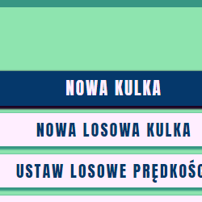
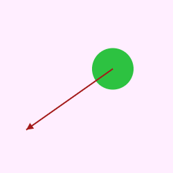

1) Naciśnij przycisk "Nowa kulka". Możemy anulować dodawanie nowej kulki przy pomocy klawisza ESCAPE.
2) Ustaw środek kulki w wolnym miejscu tak żeby była podświetlona na zielono.
3) Możesz użyć scrolla w celu zmiany promienia kulki.

4) Po ustawieniu kulki na planszy, nadaj jej przy pomocy wektora, prędkość początkową wraz z kierunkiem.